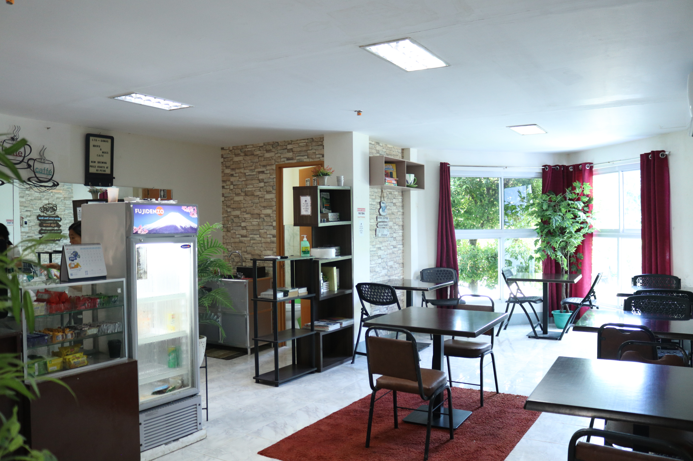
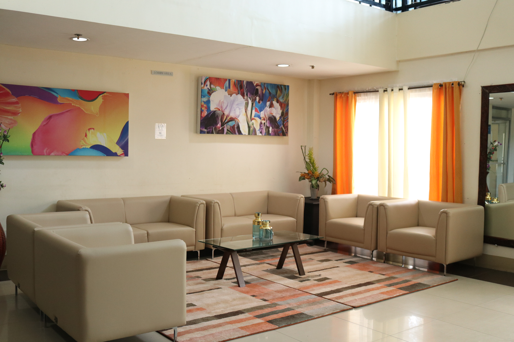
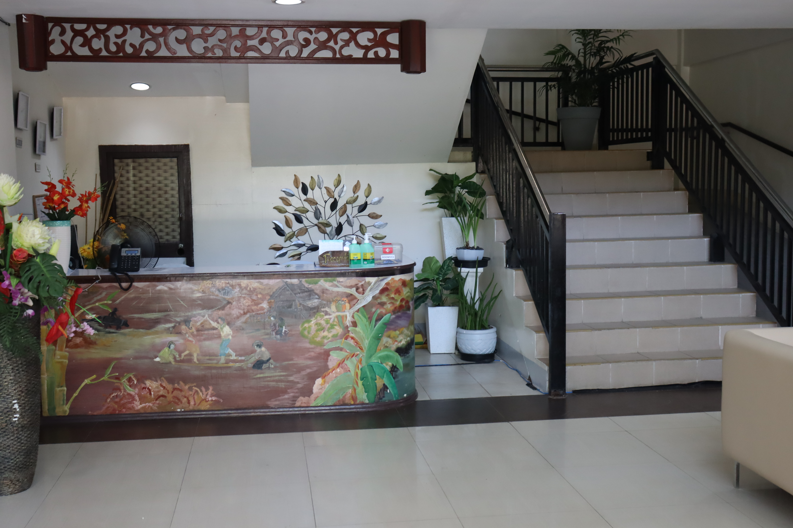
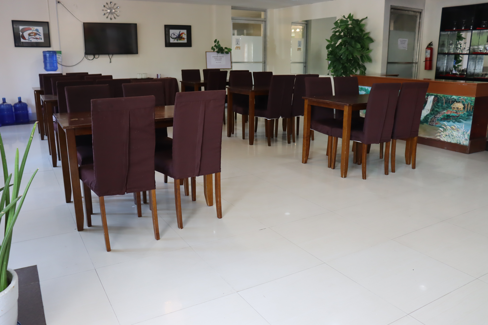
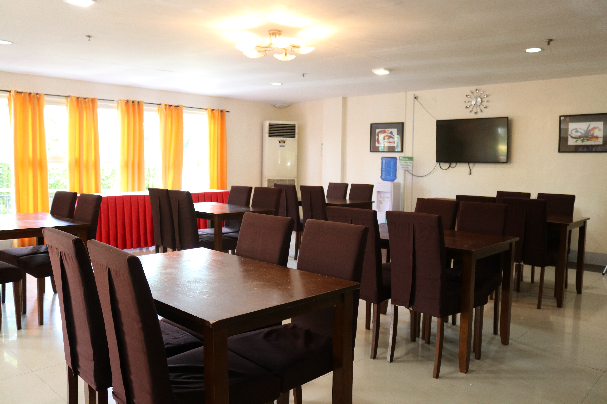

Meeting Area is one of the highlightend area of CTU - Danao Campus Facility Centrum. It was located on the 1st floor inside the CTU Facility Centrum.

At the CTU Facility Centrum, speaks and relates to anyone seeking that quality. The sense of pride in serving others is seen as a north star that never fades.
At the CTU Facility Centrum, speaks and relates to anyone seeking that quality. The sense of pride in serving others is seen as a north star that never fades.

The CTU Facility Centrum is considered as the venue for the seminars or workshops. Guests should feel comfortable while they are attending the seminar.
The CTU Facility Centrum is considered as the venue for the seminars or workshops. Guests should feel comfortable while they are attending the seminar.

The venue's business services team will handle everything right from guiding you through the various packages on offer before you make your booking, all the way to setting up things on the meeting day.

Here at the CTU Facility Centrum, we provide 10 Megabits per second (Mbps) per 100 people because good internet connection is a must to provide guests with a seamless experience.

Having ancillary spaces such as a foyer that can be used as a reception area, an open area, garden or terrace which can be used to serve light snacks and drinks during breaks, and even a cloakroom can be such an added advantage.